var event = {
type: ["Presentation", "Live coding"],
topic: "Front-end not only for .NET developers",
speaker: "Marcin Rudzki (front-end wizard)"
};
Chrome DevTools
Best way for debugging frontend issues
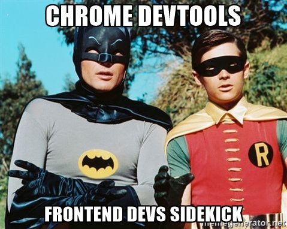What IDE or text editor should I choose?
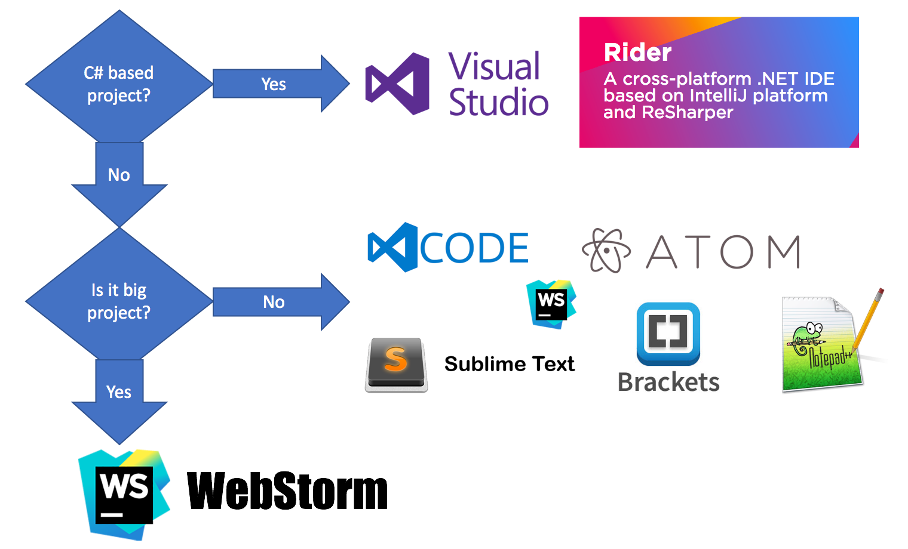Recommended extensions / plugins
- Emmet — the essential toolkit for web-developers
- Atom-live-server or Node.js http-server
-
Atom-beautify
or
Ctrl+K,Ctrl+Din Visual Studio - AtomLinter / CSSLint / ESLint
- A Color Picker for Atom
Why quality of HTML code is important
Clean HTML code leads to clean CSS code. Clean CSS code leads to clean JavaScript code.
Holy Grail Layout

/* Work on layout */
#spn-academy2 .css-master-class {
position: absolute;
right: 100%;
}

Tiles Layout
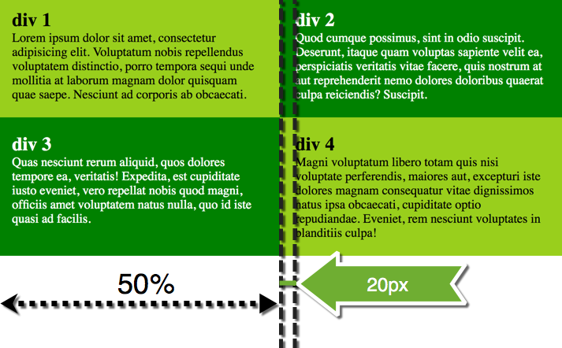Styling agenda
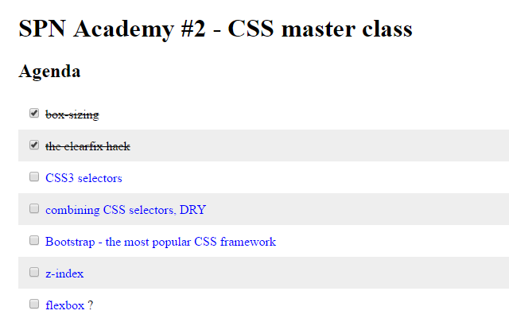CSS framework
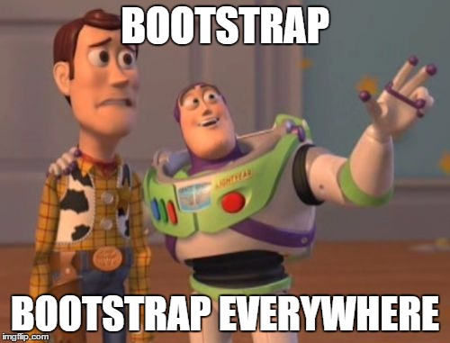Login page
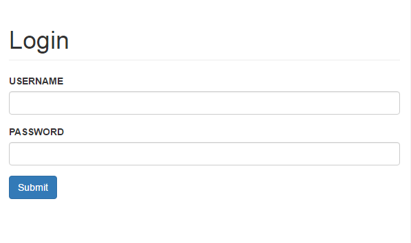 /**
* SPN Academy #3
* @author Marcin Rudzki
*/
(function $uper(name) {
return name + " is super!";
})("jQuery"); // IIFE
What is $ in JavaScript?
let $ = 5; ++$; // ?
$ = (a, b) => a + b; typeof $; // ?
$(5, 10); // ?
TODO app in jQuery
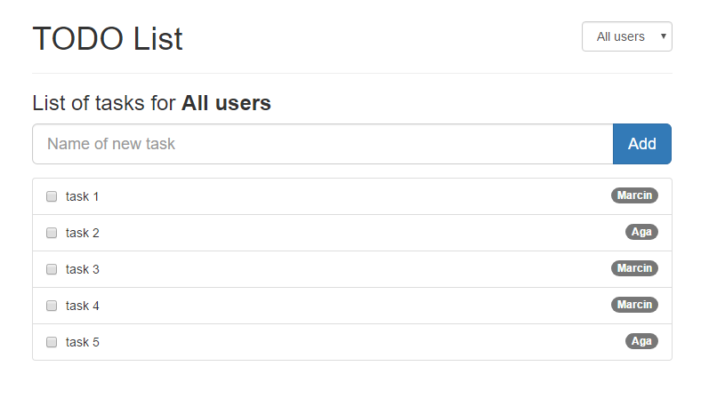
// SPN Academy #4
document.querySelectorAll(".JavaScript");
describe('spnAcademy.getTopicOf(number)', () => {
it('returns "TDD" for #5', function() {
expect(spnAcademy.getTopicOf(5)).toBe("TDD");
}); // Test-driven development
});Why TDD?
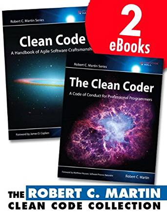 “Unit tests should be written just before the production code that makes them pass. If you write tests after the production code, then you may find the production code to be hard to test.” – Robert C. Martin
Red, Green, Refactor

Set up tools for TDD
NodeJS
Jasmine + spec reporter
Jasmine is a behavior-driven development framework for testing JavaScript code
Insect, Spider, Kraken
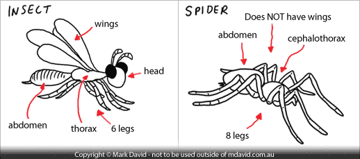Kata #2 – Prime factors

Check ingredients
- node -v
- npm -v
- npm install --global jasmine
- jasmine init
- npm i jasmine-spec-reporter
- add spec/helpers/reporter.js
- jasmine (to run tests)
- Classes & design patterns in JavaScript
- Introduction to Angular 4 & TypeScript
ECMAScript 5 classes equivalent
var Castle = function(name) {
this.name = name;
this.build = function() {
console.log(this.name)
}
};
var instance1 = new Castle("Winterfell");
var instance2 = new Castle("Harrenhal");
instance1.build(); // Winterfell
instance2.build(); // HarrenhalECMAScript 2015 classes
class Castle {
constructor(name) {
this.name = name;
}
build() {
console.log(this.name)
}
}
let instance1 = new Castle("Winterfell");
let instance2 = new Castle("Harrenhal");
instance1.build(); // Winterfell
instance2.build(); // HarrenhalMarcin Rudzki
Angular CLI allows you to focus on Angular code instead of workflow tasks.
CLI is a great tool for small, big and very big projects!
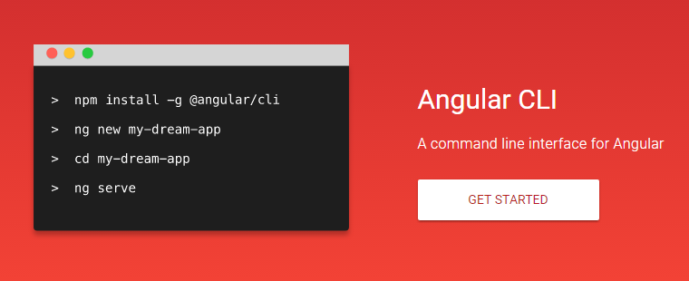An open-source programming language developed and maintained by Microsoft. It is a strict syntactical superset of JavaScript, and adds optional static typing to the language. Anders Hejlsberg, lead architect of C# has worked on its development.
A Class Decorator is declared just before a class declaration. The class decorator is applied to the constructor of the class and can be used to observe, modify, or replace a class definition.
@Component({
selector: 'app-root',
templateUrl: './app.component.html',
styleUrls: ['./app.component.css']
})
export class AppComponent {
title = 'app';
}Two-way data binding – bananas in a box
<input class="form-control" [(ngModel)]="someValue">
import { FormsModule } from '@angular/forms'
imports: [ BrowserModule, FormsModule ] //app.module.tsHow to add Bootstrap CSS properly
npm install --save bootstrap // .angular-cli.json:
"styles": [
"../node_modules/bootstrap/dist/css/bootstrap.min.css"
]How an Angular App gets
Loaded and Started

How to create custom Component manually
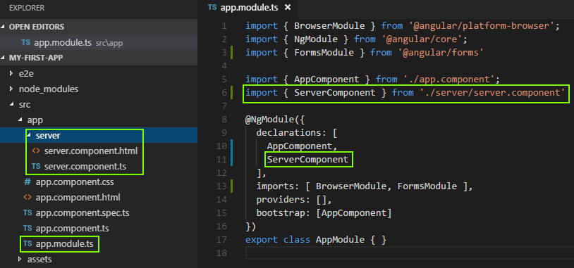How to create custom Component automatically
ng generate component servers